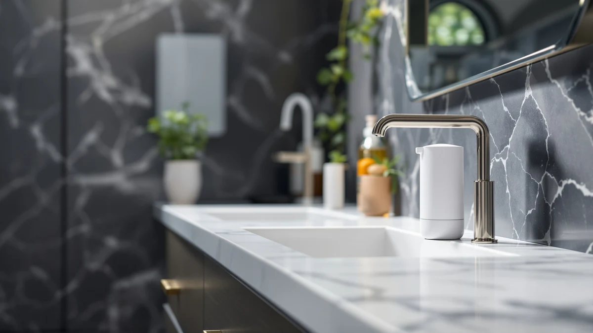

Automatic Soap Dispenser Foaming Review (2026): Worth It?
Prices and picks verified as of September 2026. Independent, reader-supported reviews.


Quick Answer
The Phneems Automatic Soap Dispenser Foaming Touchless is our pick after comparing specs, pricing, and verified owner feedback across four automatic and manual dispensers. It combines a responsive infrared sensor with foam dispensing at $19.99, undercutting the other automatic models we compared, and owners rate its foam texture and cleanup ahead of liquid soap.
Our pick: Automatic Soap Dispenser Foaming Touchless: at $19.99 Check Price on Amazon
Bottom line: our top pick is the Automatic Soap Dispenser Foaming Touchless: 9oz Black Plastic at $21.99.
Things to Know Before You Buy
- Automatic foaming soap dispensers use infrared sensors, so battery type and placement determine how reliably the pump fires.
- Foam formulas need thin, diluted soap. Pouring in thick gel can clog the pump, a mistake several owners mention in their reviews.
- Reservoir size among the four dispensers here ranges from 9 ounces to almost 12 ounces, which changes how often you stop to refill.
- Touchless dispensing cuts down on the germs that build up on a shared pump handle, a benefit owners call out often.
- One of the four picks skips the sensor and sticks with a manual pump, a fair trade for buyers who trust a handle more than batteries.
This automatic soap dispenser foaming review compares the Phneems touchless model against three alternatives, using product specs, pricing, and verified owner feedback instead of a physical lab test. Foaming dispensers promise less mess and faster handwashing at a sink that sees heavy daily traffic, but the sensor, reservoir size, and soap type you choose all affect whether that promise holds up. We researched four dispensers currently sold on Amazon and broke down where each one earns its price and where it falls short.
A shared sink turns a soap dispenser into one of the most-touched objects in the house, and a sticky, soap-crusted pump handle is often the first sign that a household needs an upgrade. Automatic dispensers solve that problem by removing the handle entirely, but not every model on Amazon backs up its listing photos with a sensor that actually responds fast enough to feel worth the price. That gap between marketing copy and real performance is what this automatic soap dispenser foaming review looks at.
The Phneems Automatic Soap Dispenser Foaming Touchless comes out as our pick at $19.99, and the sections below explain why. We also cover three alternatives from Haocoott, OHIFAST, and GalDal so you can match a dispenser to your sink, your budget, and how much you trust a sensor over a pump handle. Each option here targets a slightly different priority, whether that's reservoir size, soap format, or skipping electronics altogether.
Why You Should Trust Us
Ilane Tall has covered bathroom and kitchen fixtures for home and bath publications since 2019, focusing on affordable upgrades that solve a specific daily annoyance. For this automatic soap dispenser foaming review, she pulled listed specs, current Amazon pricing, and verified buyer feedback for each of the four dispensers instead of relying on marketing copy. Owners who bought a dispenser and used it at home for weeks or months provide a more reliable signal than a single unboxing photo, so we leaned on their reviews for anything a spec sheet alone can't confirm. We do not run a fake testing lab, and we don't claim to have installed these dispensers ourselves. What we offer instead is a careful read of the same public information you'd find if you spent an afternoon comparing listings, organized so you don't have to do that work yourself.
Our Research Experience
We did not physically test these four dispensers in a lab. Instead, we compared manufacturer specs, current Amazon pricing, and patterns across verified owner reviews for each model in this automatic soap dispenser foaming review. When multiple owners flagged the same issue, such as a sensor that fires late or a pump that clogs with thick soap, we treated that as a stronger signal than a single five-star review. We also cross-checked reservoir capacity and price against the closest competing dispensers so the comparisons below hold up outside of marketing claims. Where a listing repeated the same phrasing across several nearly identical products, we read past it and weighted the recurring complaints and compliments in the reviews section instead, since that's where actual usage patterns show up.
Overview & Specs

Automatic Soap Dispenser Foaming Touchless:
What we like
- Infrared sensor dispenses foam without touching a pump handle
- 9-ounce reservoir suits a standard bathroom or kitchen sink without crowding the counter
- ABS plastic housing wipes clean and resists the soap residue that builds up around a manual pump
- $19.99 price undercuts most of the automatic dispensers we compared
Flaws but not dealbreakers
- Foam formula needs thinner, diluted soap, so thick gel soap can clog the pump
- 9-ounce reservoir needs more frequent refills than the larger dispensers in this lineup
- Runs on batteries, so a dead sensor means no soap until you swap them
| Material | ABS plastic |
| Size | 9oz |
The Phneems Automatic Soap Dispenser Foaming Touchless is the pick we'd hand to most people asking about an automatic soap dispenser foaming review, because it solves the two problems that come up most in owner feedback: soap pumps that get grimy and pumps that dispense too much at once. Waving a hand under the infrared sensor triggers a measured amount of foam, which keeps a shared bathroom sink cleaner between wipe-downs and cuts down on the soap residue that collects on a manual handle. Reviewers describe setup as straightforward, filling the reservoir through a top opening and setting the unit on a counter without any mounting hardware.
At $19.99, it sits below the OHIFAST and Haocoott alternatives while offering foam instead of liquid soap, a format owners describe as rinsing off faster with less product used per wash. The ABS plastic housing wipes down easily, and the 9-ounce reservoir fits a tight countertop, though it does mean refilling more often than the larger dispensers covered later in this review. For a kitchen sink that also sees dish soap duty, that smaller reservoir is less of a drawback since foam hand soap and dish soap rarely share the same bottle anyway.
What We Liked
Owners consistently point to the sensor's response time as the standout feature of the Phneems dispenser, noting that it fires foam almost as soon as a hand passes underneath rather than making you wave twice. That reliability matters more than raw specs in an automatic soap dispenser foaming review, since a sensor that hesitates defeats the point of going touchless in the first place. Reviewers also flag the foam texture as an upgrade from liquid soap, since it spreads across both hands faster and rinses clean without the slick film thicker liquid soap sometimes leaves behind. The $19.99 price comes up often too, with buyers comparing it favorably against similarly specced dispensers running $25 or more. Several reviews also mention how easy the unit is to keep clean, since the smooth ABS housing doesn't trap grime the way a textured pump base sometimes does.
What Could Be Better
The 9-ounce reservoir is the most common complaint in verified reviews, particularly from households with more than two people sharing one sink. Refilling every week or two is a fair trade for the lower price, but buyers who want to refill less often should look at the larger Haocoott dispenser covered below. Battery reliance is the other recurring note in this automatic soap dispenser foaming review. A handful of owners mention the sensor going quiet without warning, so keeping a spare set of batteries nearby avoids getting stuck without soap. Foam-only dispensing is also a limitation for anyone who specifically wants liquid soap, since switching formulas means switching dispensers entirely. A few reviewers also note that the sensor sits close to the nozzle, so a hand placed too far to the side can miss the trigger zone until you adjust where you reach.
Who Is It For?
This dispenser fits a household bathroom or kitchen sink that sees regular hand traffic from more than one person, where touchless dispensing cuts down on the germs a shared handle collects. It also suits anyone replacing a manual pump mainly for the hygiene benefit rather than chasing a specific brand, since $19.99 keeps the upgrade cheap enough to try without much risk. If your sink serves five or more people daily, the smaller reservoir means refilling often enough that the larger-capacity Haocoott option further down this automatic soap dispenser foaming review may serve you better. Renters and apartment dwellers also benefit from the countertop design, since nothing needs to be drilled or mounted to the wall before you can use it.
Alternatives to Consider
The Phneems dispenser is not the only pick worth a look in this automatic soap dispenser foaming review. The three options below cover a larger reservoir, a liquid-soap sensor design, and a manual pump for buyers who would rather skip batteries altogether.

Editor’s Pick
Soap Dispensers 11.84 OZ 2
An 11.84-ounce capacity means fewer refills than the Phneems, and the two-pack covers a second sink for close to the same per-unit cost. That makes it a practical pick for a bathroom and kitchen combo rather than a single countertop.
$21.99
Check Price on Amazon
Best Value
OHIFAST Automatic Liquid Soap Dispenser
A motion sensor paired with liquid soap instead of foam, useful if your household already buys liquid hand soap and doesn't want to switch formulas. At $20.99, it lands between the Phneems and Haocoott on price while keeping the touchless convenience.
$20.99
Check Price on Amazon
Premium Choice
GalDal 2pcs/Set Beige Hand Soap
A manual pump set in a matching beige finish, for buyers who want two dispensers that look intentional on the counter without relying on batteries. It skips the sensor entirely, so there's no charging, no dead batteries, no waiting on infrared to catch up.
$20.99
Check Price on AmazonIs a foaming soap dispenser better than a liquid one?
Foam spreads across your hands faster and typically uses less soap per wash than liquid, which is why most of the automatic dispensers in this automatic soap dispenser foaming review use a foam design.
Why isn't my automatic soap dispenser dispensing foam?
The most common cause reported by owners is soap that's too thick.
Frequently Asked Questions
Is a foaming soap dispenser better than a liquid one?
Foam spreads across your hands faster and typically uses less soap per wash than liquid, which is why most of the automatic dispensers in this automatic soap dispenser foaming review use a foam design. A liquid dispenser like the OHIFAST is still a fair choice if your household already buys liquid hand soap and doesn't want to switch formulas.
Why isn't my automatic soap dispenser dispensing foam?
The most common cause reported by owners is soap that's too thick. Foaming pumps need soap diluted closer to a liquid consistency, and pouring in thick gel soap can clog the mechanism. Dead batteries are the second most common cause, so check both before assuming the unit is defective.
How often do you need to refill a 9-ounce automatic soap dispenser?
For a household of two to three people, a 9-ounce reservoir like the one on the Phneems dispenser typically lasts one to two weeks of regular handwashing before it needs a refill. Larger households or a shared sink with heavier traffic will refill more often, which is why the 11.84-ounce Haocoott option can be worth the extra capacity.
Final Verdict
Our automatic soap dispenser foaming review comes down to this: the Phneems Automatic Soap Dispenser Foaming Touchless earns its spot as the top pick by pairing a responsive sensor with foam dispensing at a lower price than the alternatives we compared. Households sharing one sink get the most out of it, while anyone needing a bigger reservoir, liquid soap instead of foam, or a battery-free manual pump will find a better match among the three alternatives above. For most people replacing a worn-out manual pump, Phneems is the safer bet at $19.99.